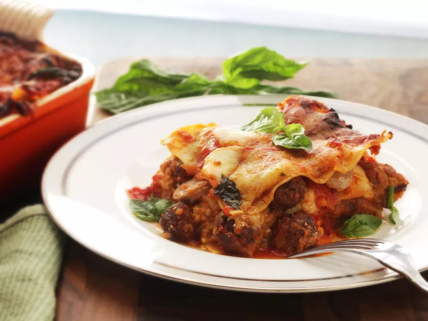

Lasagna

Description
Lasagna always feels like a celebratory sort of dish for me, and while it's true that classic Lasagna Napoletana is served as part of a winter celebration, I feel like simply making it through the whole long, delicious, and ultimately rewarding process is cause for celebration in itself. So dig in. You've earned it.
Ingredients
- 3 lbs pork spare ribs, cut into three or four chunks
- Kosher salt and freshly ground black pepper
- 3 Tbps extra-virgin olive oil
- Adjust oven rack to lower-middle position and preheat oven to 300°F. Season ribs with salt and pepper. Heat 2 tablespoons olive oil in a large Dutch oven over high heat until shimmering. Add ribs and cook without moving until well browned, 8 to 10 minutes. Flip and cook until second side is well browned, 5 to 7 minutes longer. Transfer to a plate and set aside.
- Add onions to now-empty dutch oven and cook, scraping up any browned bits, and stirring frequently until just beginning to brown, about 6 minutes. Add 8 cloves garlic and continue cooking until onions and garlic are lightly browned, about 3 minutes longer. Add pepper flakes and oregano and cook, stirring, for 30 seconds. Add wine and cook until nearly completely reduced, about 5 minutes.